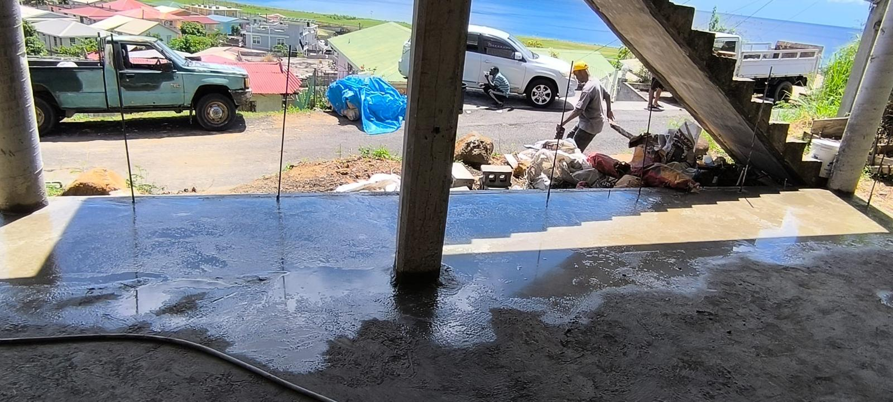
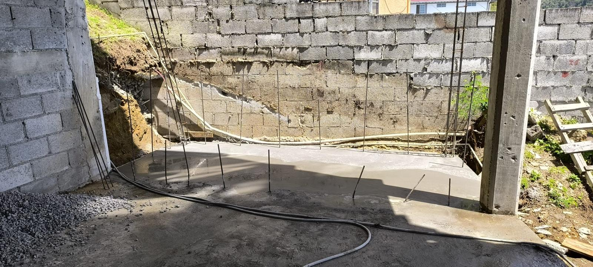

Build Better. Live Better.
Quality workmanship, reliable service, built right—serving Dominica from foundation to finish.
- Residential & commercial construction
- Renovations & finishing
- Equipment rental: jackhammer & concrete mixer

About Aldin & Brick-O-Lage
Local expertise. Strong foundations. Reliable delivery.
Brick-O-Lage Construction is led by Aldin Pierre, a Dominican builder based in Hillsborough Garden, St Joseph. With years of hands-on experience, Aldin and his team take you from your first idea on paper to a finished home or project you can be proud of.
From small renovations to full builds, Brick-O-Lage focuses on quality workmanship, reliable service, and clear communication at every stage. The goal is simple: build better, so you can live better.
Whether you’re in Dominica or abroad planning a project back home, Aldin works with you step by step—site visits, estimates, planning, construction, finishing, and final handover.


How It Works – 7 Simple Steps
From first call to key in hand.
-
1. Contact us
Call, WhatsApp or email with your project details and location.
-
2. Site visit & consultation
We visit your site, understand your needs, take measurements and share ideas.
-
3. Estimate & quote
You receive a clear, detailed estimate with transparent pricing.
-
4. Approval & planning
Once approved, we plan, schedule and prepare materials and team.
-
5. Construction begins
Our skilled team builds with precision, safety and quality workmanship.
-
6. Finishing touches
We complete all finishing works—tiling, painting, fixtures—to a high standard.
-
7. Final inspection & handover
You inspect the work, we clean up, and hand over your completed project.
Project Gallery
Real work. Real homes. Real spaces in Dominica.





Contact & Location
Ready to talk about your project?
Get in touch
- Phone / WhatsApp: +1 (767) 316-1119, +1 (767) 285-1119
- Email: aldinpierre33@gmail.com
- Location: Hillsborough Garden, St Joseph, Dominica